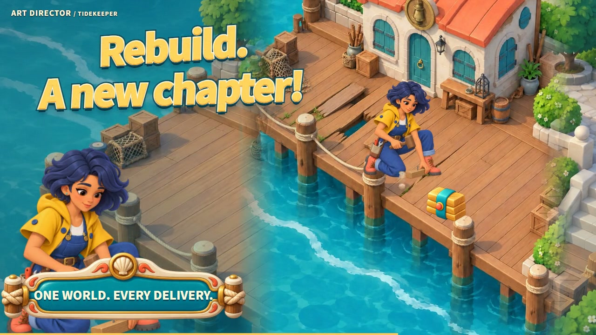
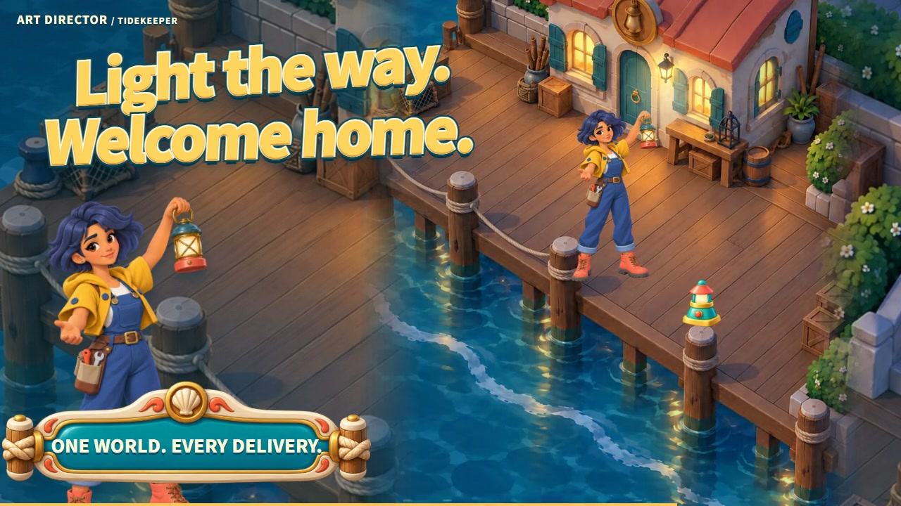
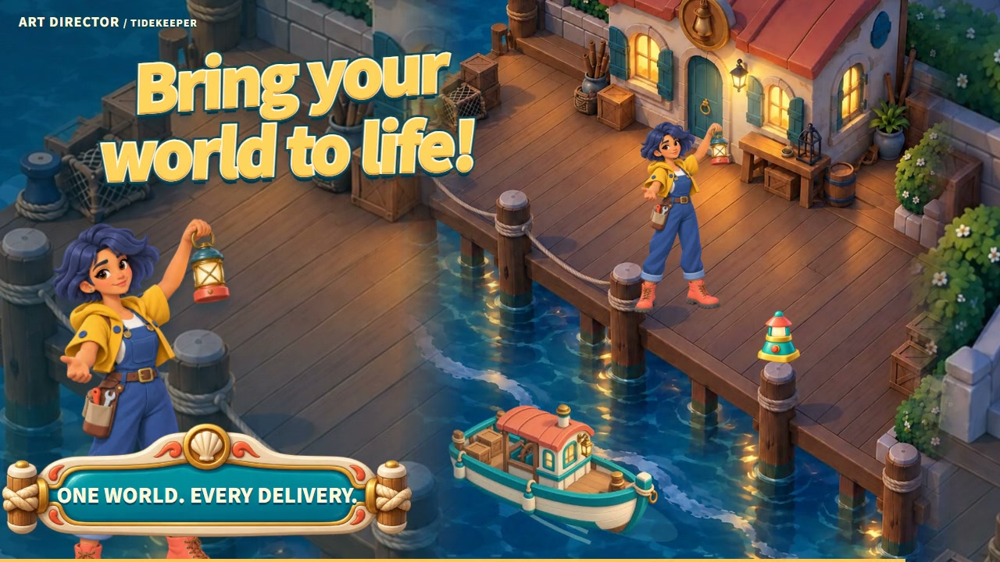

Let the work speak.
One illustrated world. Three ways to frame it. Watch the same 24-second story unfold together, with every scene composed for its screen.
Watch the latest case ↓Repair. Light.
Welcome home.
Follow the lampmaker from a damaged workshop to a lantern-lit harbor. Watch the complete Tidekeeper case here, then explore the artwork behind the story.






Latest source edition · 13 October 2026. The three-format comparison above uses the earlier six-scene edit.
A rich world.
A complete story.
Built from finished character art, environments, lamps and game UI. Every image below comes from the selected film.


Find the right
form for your story.
Start with the latest illustrated case, explore a focused product workflow, or revisit the earlier motion studies.
Tidekeeper ↗
Finished environments, characters, objects and editable game UI. Six 24-second films, composed for each format.

Pocket Notes ↗
Capture, organize, save and come back. Six focused 16-second product demonstrations.

Art Director · Original study ↗
An earlier blue-green visual system, with every scene rearranged for three aspect ratios.